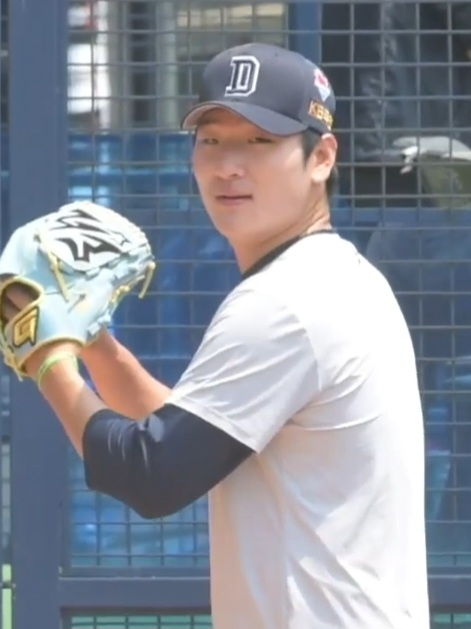
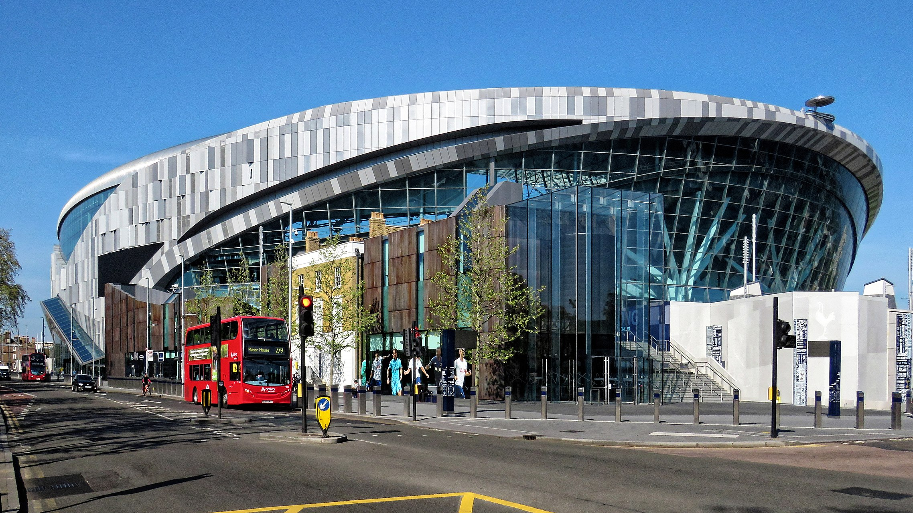
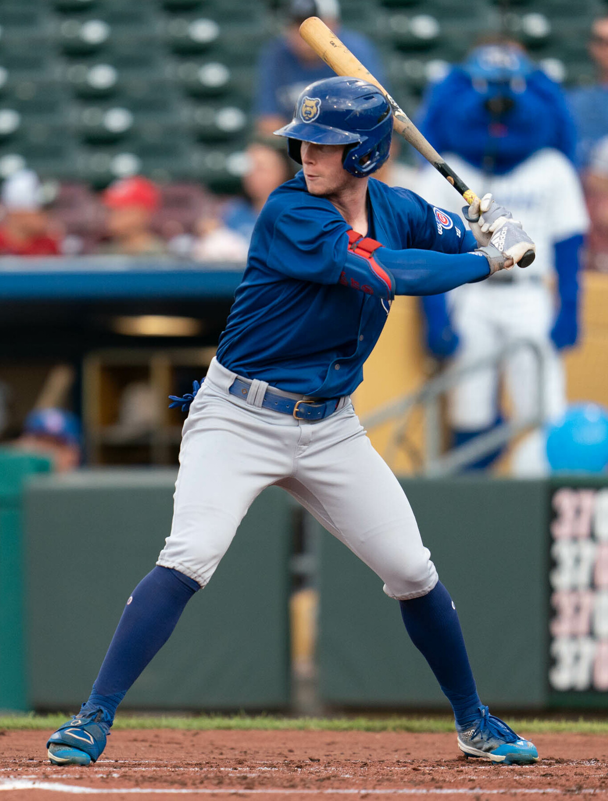

SFANDOM MODELLIVE
EDGE SCORE82/100
FORM8.4
MATCHUP7.9
SIGNALHIGH
예측을 넘어, 근거로
모든 경기에는 패턴이 있고,
모든 판단에는 근거가 있습니다.
SFANDOM은 기록·상대 전적·최근 경기력·확률 데이터를 종합해, 더 빠르고 정확한 스포츠 분석과 예측을 제공합니다.
DAILY NEWS · 2026.08.30 KST
발행 시점까지 공식 기록·신뢰 출처와 이미지 권리를 다시 대조해 고른 두 장면입니다.

01 · 160.3 KM/H SHOWCASE두산 곽빈은 키움전에서 6이닝 5피안타 3볼넷 8탈삼진 2실점으로 승리를 따냈고, 1회 케스턴 히우라를 상대로 개인 최고 160.3km/h를 찍었습니다. 현장에는 다저스·양키스·파드리스·블루제이스·로열스 스카우트가 모였습니다.
이날의 핵심은 단순 최고 구속이 아닙니다. 가장 많은 시선이 몰린 경기에서 96구 동안 선발 역할을 지키며 구속과 결과를 동시에 증명했다는 점입니다.
EN Gwak Been touched a career-high 160.3 km/h and delivered six strong innings with scouts from five MLB clubs watching at Jamsil.
PHOTO · SEOHAE1999 · CC BY-SA 3.0 · WIKIMEDIA COMMONS · GWAK BEEN · DOOSAN BEARS #47

02 · PREMIER LEAGUE WARNING토트넘은 홈에서 뉴캐슬에 0–2로 패해 개막 2연패와 리그 2경기 연속 무득점을 기록했습니다. 전반의 개선된 흐름을 살리지 못한 채 후반 Anthony Elanga와 Yoane Wissa에게 연속 실점했습니다.
투자 규모보다 더 큰 문제는 실점 뒤 경기 구조가 무너졌다는 점입니다. 전반 경기력의 개선만으로는 홈에서 반복되는 패배 패턴을 끊었다고 보기 어렵습니다.
EN Tottenham fell 2–0 at home to Newcastle, leaving Roberto De Zerbi’s side winless and scoreless through its first two league matches.
PHOTO · STADIUM SPOTTER · CC BY-SA 4.0 · WIKIMEDIA COMMONS · TOTTENHAM HOTSPUR STADIUM

KAIRO FEATURE · DATA + STORY
Pete Crow-Armstrong은 신시내티전에서 개인 첫 3홈런 경기와 6타점을 기록하며 컵스의 17–5 승리를 이끌었습니다. 마지막 홈런은 시즌 36호였고, 한 경기에서 장타 생산력을 폭발시키며 MVP 레이스에 다시 강한 장면을 남겼습니다.
한 경기 3홈런은 결과지만 더 중요한 것은 세 타석에서 서로 다른 카운트와 투구를 장타로 연결했다는 점입니다. 시즌 후반의 한 경기 폭발이 MVP 서사에 남기는 영향은 숫자 이상입니다.
PHOTO · MINDA HAAS KUHLMANN · CC BY 2.0 · WIKIMEDIA COMMONS · PETE CROW-ARMSTRONG
SFANDOM & KAIRO PICK
최종 시장 점검 · 2026.08.30 08:46 KST
PHILADELPHIA @ LA ANGELS
선발과 팀 흐름은 Philadelphia가 우세하지만, 시장 가격 대비 모델 우위가 얇고 공개 지표는 과열 신호까지 섞여 있습니다. 무엇보다 SFANDOM 4대 자료 중 실제 tickets/handle 통합 원자료가 완전하지 않아 확정 Pick으로 승격하지 않습니다. EN · Strong favorite, insufficient price and market confirmation — PASS.
WHY PASS · VegasInsider 공개 추세는 Philadelphia 쏠림을 90% 이상으로 표시하는 구간이 있고, Covers 컨센서스는 70%대입니다. 서로 다른 공개 지표만으로 실제 구매율을 대체하지 않습니다.
MLB's first 50-HR / 50-SB season · 2024
화려한 숫자보다 판단에 도움이 되는 근거를 우선합니다. 모든 경기를 다루기보다 분석 가치가 분명한 경기에 집중합니다.
검증 가능한 데이터와 일관된 기준으로 분석합니다.
VERIFIED DATA ↗기록, 경기력, 상대 전적을 하나의 분석으로 연결합니다.
EVIDENCE FIRST ↗모든 경기가 아니라 분석 가치가 있는 경기에 집중합니다.
SELECTIVE EDGE ↗결과뿐 아니라 판단 과정과 근거까지 다시 봅니다.
REVIEW PROCESS ↗SFANDOM ODDS MAKER
최근 경기력, 선발과 라인업, 상대 전적, 경기 환경과 배당 움직임을 함께 비교해 최종 판단의 근거를 만듭니다.
분석 프레임워크 보기 →SPORTS CONTENT

KAIRO'S NOTE
SFANDOM은 스포츠 분석가 Ji와 AI 분석 파트너 KAIRO가 함께 운영합니다. Ji의 분석 경험과 판단에 KAIRO의 데이터 정리·비교 분석·복기가 더해져, 경기 전후의 핵심 근거를 빠르고 이해하기 쉽게 전달합니다.
SFANDOM MANIFESTO
우리는 예측을 포장하지 않습니다.
우리는 판단의 근거를 설계합니다.